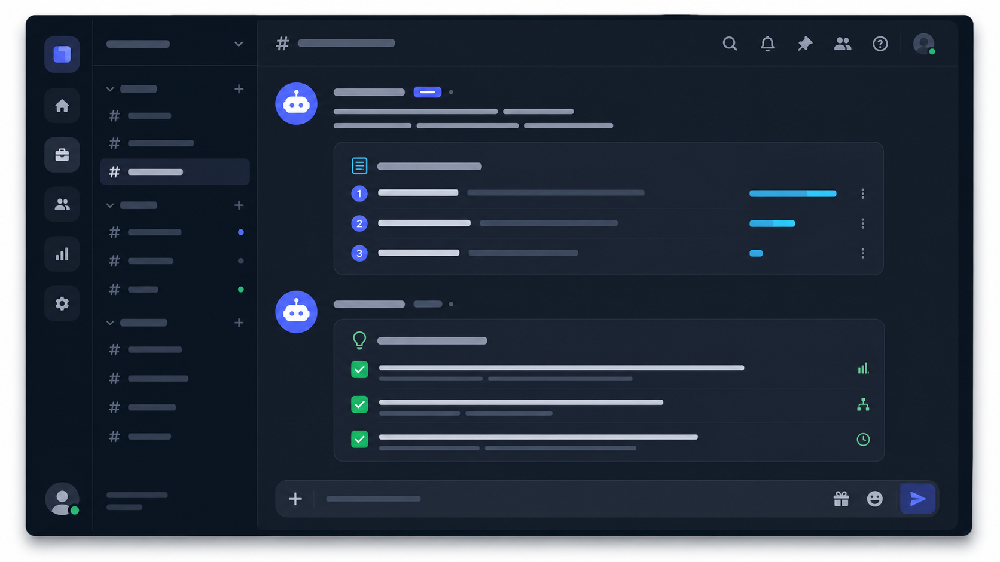
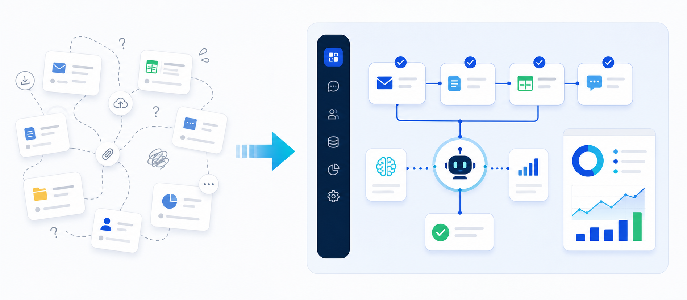
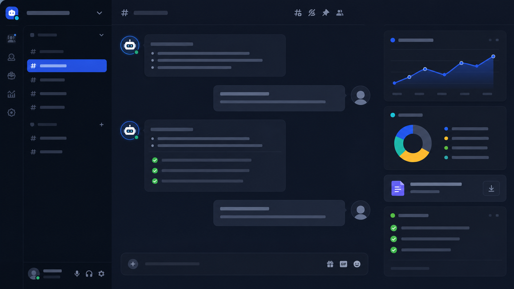

何から始めるべきかわからない
情報が多すぎて、自社に必要な一歩が見えない。
AI研修・業務自動化・Bot構築
法人AI研修、業務自動化、Discord Bot構築まで。 御社の業務に合わせて、AI活用を設計・実装します。
具体的な導入内容が決まっていなくても大丈夫です。まずは業務を整理するところから相談できます。

Problem
AIに詳しくないから進まないのではありません。自社に合う進め方が、まだ見えていないだけかもしれません。
情報が多すぎて、自社に必要な一歩が見えない。
受けて満足で終わり、現場で使われないのが心配。
自社に合うツールや組み合わせがわからない。
やりたいことはあるが、実装範囲がまとまらない。
Solution
いきなり高度な仕組みを作るより、まずは業務を整理し、AIが役立つ場所を見つけることが大切です。 そのうえで研修、テンプレート化、Bot構築、運用改善へ進めます。

Benefit
受講後は、AIの知識だけでなく、日々の業務でどう使うかが見える状態を目指します。
御社の業務の中で、AI化しやすい場所と後回しでよい場所を整理できます。
社員に伝えやすい基本知識と、業務別の活用例を持ち帰れます。
営業メール、資料作成、SNS投稿などをゼロから作る時間を減らせます。
Discord Botや社内問い合わせBotなど、必要なAIツールの方向性を考えやすくなります。
Service
研修だけ、Bot構築だけ、継続支援まで。目的に合わせて必要な支援を組み合わせます。
Demo
実用のBotと会話しながら、社内での活用シーンを体験できます。 体験後は公式LINEで、御社に合う導入方法を相談できます。

Curriculum
業務整理から研修、実務活用、Bot化、改善運用まで順番に進めます。
業務の可視化と課題・優先順位を整理。
基本概念とプロンプトの基礎を習得。
部門・業務に合わせた実践トレーニング。
要件をまとめ、運用しやすいBotを実装。
効果測定と改善で継続的に成果を創出。
Recommended
Credibility
公開前の実績は「支援例」として掲載しています。実際の声に差し替えられる構成です。
専門用語をかみ砕いて説明してもらい、自社に合う活用方針を一緒に整理できました。
製造業 / 取締役研修だけで終わらず、実務で使えるテンプレートや台本まで確認してもらえました。
サービス業 / 人事部長Discord Botのデモが具体的で、要件整理も丁寧に伴走してくれました。
IT企業 / マネージャー戦略設計から実行まで、伴走して支援します。
研修資料・台本・Botをまとめて設計します。
AI活用の棚卸しと組織導入を支援します。
FAQ
はい。まずは公式LINEで現状を伺い、必要に応じてデモや相談の流れをご案内します。
可能です。法人研修のみ、研修後のBot構築、継続支援まで必要な範囲でご提案します。
業種は限定していません。中小企業や成長企業を中心に、課題と導入範囲に合わせて設計します。
Profile
中小企業のAI活用を、戦略設計から研修・実装・運用まで一貫して支援します。 現場に寄り添い、実務で使えるAI活用を一緒に作ります。